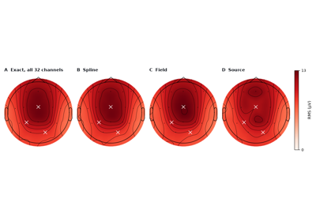

braindecode.modules.ChannelLayer#
- class braindecode.modules.ChannelLayer(target, strategy, chs_info=None, *, drop_non_eeg=False, trainable=False, **kwargs)[source]#
Map any montage onto
targetwith one matrix per montage.Warning
Experimental. Public API may change without a deprecation cycle.
- Parameters:
target (list of dict) – Channels the backbone consumes (
ch_name, optionalloc).strategy (str) –
"exact"(a missing target is an error),"zero","nearest","idw"(p),"spline"(reg=1e-3),"field"(reg=0) or"source"(n_parcels=64,lam=0.1,grid_mm=15,trainable: a zero-initialised parcel mixing on top of the physics)."wiener"(noise=0.01; callfit()first),"region"(mean withinradius, default 1.5 x the median input spacing) or"latent"(d_model=64,n_freqs=8: learned cross-attention from each missing target’s position over the inputs’ positions and statistics).chs_info (list of dict, optional) – Montage used when
forward()gets none.drop_non_eeg (bool) – Ignore input channels that are not electrodes instead of raising.
Notes
forwardalso takes one montage per sample (chs_infoa list of montages,xpadded to the largest andch_maskthe real channels), for the strategies without trained state (notlatentortrainable);observedis then(batch, n_targets)and the bufferweightis that of the last sample. A model with achannel_strategybuilds these montages from theposandch_maskofpad_channels_collate()withmontages().Methods
- fit(X, chs_info_dense)[source]#
Fit the spatial covariance of the
wienerstrategy on a dense recording.- Parameters:
- Returns:
This layer; its covariance and positions are saved in the
state_dict.- Return type:
- forward(x, chs_info=None, ch_mask=None)[source]#
Map a batch onto the target channels.
- Parameters:
x (
Tensor) – Signal recorded withchs_info; with one montage per sample, padded to the largest montage.chs_info (
list[dict] |list[list[dict]] |None) – Montage ofx, or one montage per sample. Defaults to the montage given at construction.ch_mask (
Tensor|None) – With one montage per sample,Truefor the real channels of each sample (default: the first ones, aspad_channels_collate()pads).
- Return type:
- Returns:
mapped (torch.Tensor of shape (batch, n_targets, time)) –
xin the target channels.observed (torch.Tensor of bool) – Targets that are measured or exactly derived:
(n_targets,), or(batch, n_targets)with one montage per sample.
- montages(pos, ch_mask)[source]#
One montage per sample from the positions of a padded batch.
- Parameters:
pos (
Tensor) – Head-frame positions of each sample’s channels, aspad_channels_collate()pads them.ch_mask (
Tensor) –Truefor the real channels of each sample.
- Returns:
For each sample, its real channels named
#0, #1, ...at their positions, forforward(). A montage is built once per set of positions (the last 32 are kept), so the maps offorward()stay cached per montage.- Return type:
Examples using braindecode.modules.ChannelLayer#

Running a Pretrained Model on Any Channel Set with the Channel Layer